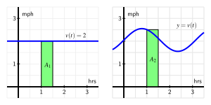

Section4.1Determining distance traveled from velocity
Motivating Questions
If we know the velocity of a moving body at every point in a given interval, can we determine the distance the object has traveled on the time interval?
How is the problem of finding distance traveled related to finding the area under a certain curve?
What does it mean to antidifferentiate a function and why is this process relevant to finding distance traveled?
If velocity is negative, how does this impact the problem of finding distance traveled?
In the first section of the text, we considered a moving object with known position at time \(t\text{,}\) namely, a tennis ball tossed into the air with height \(s\) (in feet) at time \(t\) (in seconds) given by \(s(t) = 64 - 16(t-1)^2\text{.}\) We investigated the average velocity of the ball on an interval \([a,b]\text{,}\) computed by the difference quotient \(\frac{s(b)-s(a)}{b-a}\text{.}\) We found that we could determine the instantaneous velocity of the ball at time \(t\) by taking the derivative of the position function,
Thus, if its position function is differentiable, we can find the velocity of a moving object at any point in time.
From this study of position and velocity we have learned a great deal. We can use the derivative to find a function’s instantaneous rate of change at any point in the domain, to find where the function is increasing or decreasing, where it is concave up or concave down, and to locate relative extremes. The vast majority of the problems and applications we have considered have involved the situation where a particular function is known and we seek information that relies on knowing the function’s instantaneous rate of change. For all these tasks, we proceed from a function \(f\) to its derivative, \(f'\text{,}\) and use the meaning of the derivative to help us answer important questions.
We have also encountered the reverse situation, where we know the derivative of a function, \(f'\text{,}\) and try to deduce information about \(f\text{.}\) We will focus our attention in Chapter 4 on this problem: if we know the instantaneous rate of change of a function, can we find the function itself? We start with a more specific question: if we know the instantaneous velocity of an object moving along a straight line path, can we find its corresponding position function?
Preview Activity4.1.1.
Suppose that a person is taking a walk along a long straight path and walks at a constant rate of 3 miles per hour. Below is a graph of the velocity function \(v(t)=3\text{.}\)
How far did the person travel in the first 2 hours?
Distance: miles
This distance is the area under the velocity graph and above the \(x-\)axis between
x=0 and x=1
x=0 and x=2
x=1 and x=2
Find an algebraic formula \(s(t)\) for the position of the person at time \(t\text{,}\) assuming that \(s(0)=0\text{.}\)
\(s(t) =\)
Note that because the velocity graph is above the \(x-\)axis, we know that the position function \(s\) is
Decreasing
Increasing
Sometimes increasing and sometimes decreasing
Can’t tell
Subsection4.1.1Area under the graph of the velocity function
In Preview Activity 4.1.1, we learned that when the velocity of a moving object’s velocity is constant (and positive), the area under the velocity curve over an interval of time tells us the distance the object traveled.

Figure4.1.1.At left, a constant velocity function; at right, a non-constant velocity function.
The left-hand graph of Figure 4.1.1 shows the velocity of an object moving at 2 miles per hour over the time interval \([1,1.5]\text{.}\) The area \(A_1\) of the shaded region under \(y = v(t)\) on \([1,1.5]\) is
This result is simply the fact that distance equals rate times time, provided the rate is constant. Thus, if \(v(t)\) is constant on the interval \([a,b]\text{,}\) the distance traveled on \([a,b]\) is equal to the area \(A\) given by
\begin{equation*}
A = v(a) (b-a) = v(a) \Delta t\text{,}
\end{equation*}
where \(\Delta t\) is the change in \(t\) over the interval. (Since the velocity is constant, we can use any value of \(v(t)\) on the interval \([a,b]\text{,}\) we simply chose \(v(a)\text{,}\) the value at the interval’s left endpoint.) For several examples where the velocity function is piecewise constant, see this applet 1 .
The situation is more complicated when the velocity function is not constant. But on relatively small intervals where \(v(t)\) does not vary much, we can use the area principle to estimate the distance traveled. The graph at right in Figure 4.1.1 shows a non-constant velocity function. On the interval \([1,1.5]\text{,}\) the velocity varies from \(v(1) = 2.5\) down to \(v(1.5) \approx 2.1\text{.}\) One estimate for the distance traveled is the area of the pictured rectangle,
Note that because \(v\) is decreasing on \([1,1.5]\text{,}\)\(A_2 = 1.25\) is an over-estimate of the actual distance traveled.
To estimate the area under this non-constant velocity function on a wider interval, say \([0,3]\text{,}\) one rectangle will not give a good approximation. Instead, we could use the six rectangles pictured in Figure 4.1.2, find the area of each rectangle, and add up the total. Obviously there are choices to make and issues to understand: How many rectangles should we use? Where should we evaluate the function to decide the rectangle’s height? What happens if the velocity is sometimes negative? Can we find the exact area under any non-constant curve?
Figure4.1.2.Using six rectangles to estimate the area under \(y = v(t)\) on \([0,3]\text{.}\)
We will study these questions and more in what follows; for now it suffices to observe that the simple idea of the area of a rectangle gives us a powerful tool for estimating distance traveled from a velocity function, as well as for estimating the area under an arbitrary curve. To explore the use of multiple rectangles to approximate area under a non-constant velocity function, see this applet 2 .
Activity4.1.2.
Suppose that a person is walking in such a way that her velocity varies slightly according to the information given in Table 4.1.3 and graph given in Figure 4.1.4.
\(t\)
\(v(t)\)
\(0.00\)
\(1.500\)
\(0.25\)
\(1.789\)
\(0.50\)
\(1.938\)
\(0.75\)
\(1.992\)
\(1.00\)
\(2.000\)
\(1.25\)
\(2.008\)
\(1.50\)
\(2.063\)
\(1.75\)
\(2.211\)
\(2.00\)
\(2.500\)
Table4.1.3.Velocity data for the person walking.
Figure4.1.4.The graph of \(y = v(t)\text{.}\)
Using the grid, graph, and given data appropriately, estimate the distance traveled by the walker during the two hour interval from \(t = 0\) to \(t = 2\text{.}\) You should use time intervals of width \(\Delta t = 0.5\text{,}\) choosing a way to use the function consistently to determine the height of each rectangle in order to approximate distance traveled.
How could you get a better approximation of the distance traveled on \([0,2]\text{?}\) Explain, and then find this new estimate.
Now suppose that you know that \(v\) is given by \(v(t) = 0.5t^3-1.5t^2+1.5t+1.5\text{.}\) Remember that \(v\) is the derivative of the walker’s position function, \(s\text{.}\) Find a formula for \(s\) so that \(s' = v\text{.}\)
Based on your work in (c), what is the value of \(s(2) - s(0)\text{?}\) What is the meaning of this quantity?
Subsection4.1.2Two approaches: area and antidifferentiation
When the velocity of a moving object is positive, the object’s position is always increasing. (We will soon consider situations where velocity is negative; for now, we focus on the situation where velocity is always positive.) We have established that whenever \(v\) is constant on an interval, the exact distance traveled is the area under the velocity curve. When \(v\) is not constant, we can estimate the total distance traveled by finding the areas of rectangles that approximate the area under the velocity curve.
Thus, we see that finding the area between a curve and the horizontal axis is an important exercise: besides being an interesting geometric question, if the curve gives the velocity of a moving object, the area under the curve tells us the exact distance traveled on an interval. We can estimate this area if we have a graph or a table of values for the velocity function.
In Activity 4.1.2, we encountered an alternate approach to finding the distance traveled. If \(y = v(t)\) is a formula for the instantaneous velocity of a moving object, then \(v\) must be the derivative of the object’s position function, \(s\text{.}\) If we can find a formula for \(s(t)\) from the formula for \(v(t)\text{,}\) we will know the position of the object at time \(t\text{,}\) and the change in position over a particular time interval tells us the distance traveled on that interval.
For a simple example, consider the situation from Preview Activity 4.1.1, where a person is walking along a straight line with velocity function \(v(t) = 3\) mph.
Figure4.1.5.The velocity function \(v(t) = 3\) and corresponding position function \(s(t) = 3t\text{.}\)
On the left-hand graph of the velocity function in Figure 4.1.5, we see the relationship between area and distance traveled,
In addition, we observe 3  that if \(s(t) = 3t\text{,}\) then \(s'(t) = 3\text{,}\) so \(s(t) = 3t\) is the position function whose derivative is the given velocity function, \(v(t) = 3\text{.}\) The respective locations of the person at times \(t = 0.25\) and \(t = 1.5\) are \(s(1.5) = 4.5\) and \(s(0.25) = 0.75\text{,}\) and therefore
This is the person’s change in position on \([0.25,1.5]\text{,}\) which is precisely the distance traveled. In this example there are profound ideas and connections that we will study throughout Chapter 4.
For now, observe that if we know a formula for a velocity function \(v\text{,}\) it can be very helpful to find a function \(s\) that satisfies \(s' = v\text{.}\) We say that \(s\) is an antiderivative of \(v\text{.}\) More generally, we have the following formal definition.
Definition4.1.6.
If \(g\) and \(G\) are functions such that \(G' = g\text{,}\) we say that \(G\) is an antiderivative of \(g\text{.}\)
For example, if \(g(x) = 3x^2 + 2x\text{,}\)\(G(x) = x^3 + x^2\) is an antiderivative of \(g\text{,}\) because \(G'(x) = g(x)\text{.}\) Note that we say “an” antiderivative of \(g\) rather than “the” antiderivative of \(g\text{,}\) because \(H(x) = x^3 + x^2 + 5\) is also a function whose derivative is \(g\text{,}\) and thus \(H\) is another antiderivative of \(g\text{.}\)
Activity4.1.3.
A ball is tossed vertically in such a way that its velocity function is given by \(v(t) = 32 - 32t\text{,}\) where \(t\) is measured in seconds and \(v\) in feet per second. Assume that this function is valid for \(0 \le t \le 2\text{.}\)
For what values of \(t\) is the velocity of the ball positive? What does this tell you about the motion of the ball on this interval of time values?
Find an antiderivative, \(s\text{,}\) of \(v\) that satisfies \(s(0) = 0\text{.}\)
Compute the value of \(s(1) - s(\frac{1}{2})\text{.}\) What is the meaning of the value you find?
Using the graph of \(y = v(t)\) provided in Figure 4.1.7, find the exact area of the region between the velocity curve and the \(t\)-axis between \(t = \frac{1}{2}\) and \(t = 1\text{.}\) What is the meaning of the value you find?
Figure4.1.7.The graph of \(y = v(t)\text{.}\)
Answer the same questions as in (c) and (d) but instead using the interval \([0,1]\text{.}\)
What is the value of \(s(2) - s(0)\text{?}\) What does this result tell you about the flight of the ball? How is this value connected to the provided graph of \(y = v(t)\text{?}\) Explain.
Subsection4.1.3When velocity is negative
The assumption that the velocity is positive on a given interval guarantees that the movement of an object is always in a single direction, and hence ensures that its change in position is the same as the distance it travels. As we saw in Activity 4.1.3, there are natural settings in which an object’s velocity is negative, and we would like to understand this scenario as well.
Consider a simple example where a woman goes for a walk on the beach along a stretch of very straight shoreline that runs east-west. We assume that her initial position is \(s(0) = 0\text{,}\) and that her position function increases as she moves east from her starting location. For instance, \(s = 1\) mile represents one mile east of the start location, while \(s = -1\) tells us she is one mile west of where she began walking on the beach.
Now suppose she walks in the following manner. From the outset at \(t = 0\text{,}\) she walks due east at a constant rate of \(3\) mph for 1.5 hours. After 1.5 hours, she stops abruptly and begins walking due west at a constant rate of \(4\) mph and does so for 0.5 hours. Then, after another abrupt stop and start, she resumes walking at a constant rate of \(3\) mph to the east for one more hour. What is the total distance she traveled on the time interval from \(t = 0\) to \(t = 3\text{?}\) What is the total change in her position over that time?
These questions are possible to answer without calculus because the velocity is constant on each interval. From \(t = 0\) to \(t = 1.5\text{,}\) she traveled
Since the velocity for \(1.5 \lt t \lt 2\) is \(v = -4\text{,}\) indicating motion in the westward direction, the woman first walked 4.5 miles east, then 2 miles west, followed by 3 more miles east. Thus, the total change in her position is
We have been able to answer these questions fairly easily, and if we think about the problem graphically, we can generalize our solution to the more complicated setting when velocity is not constant, and possibly negative.
Figure4.1.8.At left, the velocity function of the person walking; at right, the corresponding position function.
In Figure 4.1.8, we see how the distances we computed can be viewed as areas: \(A_1 = 4.5\) comes from multiplying rate times time (\(3 \cdot 1.5\)), as do \(A_2\) and \(A_3\text{.}\) But while \(A_2\) is an area (and is therefore positive), because the velocity function is negative for \(1.5 \lt t \lt 2\text{,}\) this area has a negative sign associated with it. The negative area distinguishes between distance traveled and change in position.
But the change in position has to account for travel in the negative direction. An area above the \(t\)-axis is considered positive because it represents distance traveled in the positive direction, while one below the \(t\)-axis is viewed as negative because it represents travel in thenegative direction. Thus, the change in the woman’s position is
In other words, the woman walks 4.5 miles in the positive direction, followed by two miles in the negative direction, and then 3 more miles in the positive direction.
Negative velocity is also seen in the graph of the position function \(y=s(t)\text{.}\) Its slope is negative (specifically, \(-4\)) on the interval \(1.5\lt t\lt 2\) because the velocity is \(-4\) on that interval. The negative slope shows the position function is decreasing because the woman is walking east, rather than west.
To summarize, we see that if velocity is sometimes negative, a moving object’s change in position is different from its distance traveled. If we compute separately the distance traveled on each interval where velocity is positive or negative, we can calculate either the total distance traveled or the total change in position. We assign a negative value to distances traveled in the negative direction when we calculate change in position, but a positive value when we calculate the total distance traveled.
Activity4.1.4.
Suppose that an object moving along a straight line path has its velocity \(v\) (in meters per second) at time \(t\) (in seconds) given by the piecewise linear function whose graph is pictured at left in Figure 4.1.9. We view movement to the right as being in the positive direction (with positive velocity), while movement to the left is in the negative direction.
Figure4.1.9.The velocity function of a moving object.
Suppose further that the object’s initial position at time \(t = 0\) is \(s(0) = 1\text{.}\)
Determine the total distance traveled and the total change in position on the time interval \(0 \le t \le 2\text{.}\) What is the object’s position at \(t = 2\text{?}\)
On what time intervals is the moving object’s position function increasing? Why? On what intervals is the object’s position decreasing? Why?
What is the object’s position at \(t = 8\text{?}\) How many total meters has it traveled to get to this point (including distance in both directions)? Is this different from the object’s total change in position on \(t = 0\) to \(t = 8\text{?}\)
Find the exact position of the object at \(t = 1, 2, 3, \ldots, 8\) and use this data to sketch an accurate graph of \(y = s(t)\) on the axes provided at right in Figure 4.1.9. How can you use the provided information about \(y = v(t)\) to determine the concavity of \(s\) on each relevant interval?
Subsection4.1.4Summary
If we know the velocity of a moving body at every point in a given interval and the velocity is positive throughout, we can estimate the object’s distance traveled and in some circumstances determine this value exactly.
In particular, when velocity is positive on an interval, we can find the total distance traveled by finding the area under the velocity curve and above the \(t\)-axis on the given time interval. We may only be able to estimate this area, depending on the shape of the velocity curve.
An antiderivative of a function \(f\) is a new function \(F\) whose derivative is \(f\text{.}\) That is, \(F\) is an antiderivative of \(f\) provided that \(F' = f\text{.}\) In the context of velocity and position, if we know a velocity function \(v\text{,}\) an antiderivative of \(v\) is a position function \(s\) that satisfies \(s' = v\text{.}\) If \(v\) is positive on a given interval, say \([a,b]\text{,}\) then the change in position, \(s(b) - s(a)\text{,}\) measures the distance the moving object traveled on \([a,b]\text{.}\)
If its velocity is sometimes negative, a moving object is sometimes traveling in the opposite direction or backtracking. To determine distance traveled, we have to compute the distance separately on intervals where velocity is positive or negative, and account for the change in position on each such interval.
Exercises4.1.5Exercises
1.
A car comes to a stop six seconds after the driver applies the brakes. While the brakes are on, the following velocities are recorded:
Time since brakes applied (sec)
0
2
4
6
Velocity (ft/s)
99
50
18
0
Give lower and upper estimates (using all of the available data) for the distance the car traveled after the brakes were applied.
On a sketch of velocity against time, show the lower and upper estimates you found above..
2.
The velocity of a car is \(f(t) = 3 t\) meters/second. Use a graph of \(f(t)\) to find the exact distance traveled by the car, in meters, from \(t=0\) to \(t=10\) seconds.
The velocity of a particle moving along the \(x\)-axis is given by \(f(t)
= 6 - 2 t\) cm/sec. Use a graph of \(f(t)\) to find the exact change in position of the particle from time \(t=0\) to \(t=4\) seconds.
The velocity function is \(v(t) = t^2 - 3 t + 2\) for a particle moving along a line. Find the displacement (net distance covered) of the particle during the time interval \([-2,5]\text{.}\)
displacement =
5.
A car traveling at \(40\) ft/sec decelerates at a constant \(8\) feet per second squared. How many feet does the car travel before coming to a complete stop?
Along the eastern shore of Lake Michigan from Lake Macatawa (near Holland) to Grand Haven, there is a bike path that runs almost directly north-south. For the purposes of this problem, assume the road is completely straight, and that the function \(s(t)\) tracks the position of the biker along this path in miles north of Pigeon Lake, which lies roughly halfway between the ends of the bike path.
Suppose that the biker’s velocity function is given by the graph in Figure 4.1.10 on the time interval \(0 \le t \le 4\) (where \(t\) is measured in hours), and that \(s(0) = 1\text{.}\)
Figure4.1.10.The graph of the biker’s velocity, \(y = v(t)\text{,}\) at left. At right, axes to plot an approximate sketch of \(y = s(t)\text{.}\)
Approximately how far north of Pigeon Lake was the cyclist when she was the greatest distance away from Pigeon Lake? At what time did this occur?
What is the cyclist’s total change in position on the time interval \(0 \le t \le 2\text{?}\) At \(t = 2\text{,}\) was she north or south of Pigeon Lake?
What is the total distance the biker traveled on \(0 \le t \le 4\text{?}\) At the end of the ride, how close was she to the point at which she started?
Sketch an approximate graph of \(y = s(t)\text{,}\) the position function of the cyclist, on the interval \(0 \le t \le 4\text{.}\) Label at least four important points on the graph of \(s\text{.}\)
8.
A toy rocket is launched vertically from the ground on a day with no wind. The rocket’s vertical velocity at time \(t\) (in seconds) is given by \(v(t)= 500-32t\) feet/sec.
At what time after the rocket is launched does the rocket’s velocity equal zero? Call this time value \(a\text{.}\) What happens to the rocket at \(t = a\text{?}\)
Find the value of the total area enclosed by \(y = v(t)\) and the \(t\)-axis on the interval \(0 \le t \le a\text{.}\) What does this area represent in terms of the physical setting of the problem?
Find an antiderivative \(s\) of the function \(v\text{.}\) That is, find a function \(s\) such that \(s'(t) = v(t)\text{.}\)
Compute the value of \(s(a) - s(0)\text{.}\) What does this number represent in terms of the physical setting of the problem?
Compute \(s(5) - s(1)\text{.}\) What does this number tell you about the rocket’s flight?
9.
An object moving along a horizontal axis has its instantaneous velocity at time \(t\) in seconds given by the function \(v\) pictured in Figure 4.1.11, where \(v\) is measured in feet/sec. Assume that the curves that make up the parts of the graph of \(y=v(t)\) are either portions of straight lines or portions of circles.
Figure4.1.11.The graph of \(y = v(t)\text{,}\) the velocity function of a moving object.
Determine the exact total distance the object traveled on \(0 \le t \le 2\text{.}\)
What is the value and meaning of \(s(5) - s(2)\text{,}\) where \(y = s(t)\) is the position function of the moving object?
On which time interval did the object travel the greatest distance: \([0,2]\text{,}\)\([2,4]\text{,}\) or \([5,7]\text{?}\)
On which time interval(s) is the position function \(s\) increasing? At which point(s) does \(s\) achieve a relative maximum?
10.
Filters at a water treatment plant become dirtier over time and thus become less effective; they are replaced every 30 days. During one 30-day period, the rate at which pollution passes through the filters into a nearby lake (in units of particulate matter per day) is measured every 6 days and is given in the following table. The time \(t\) is measured in days since the filters were replaced.
Table4.1.12.Pollution data for the water filters.
Day, \(t\)
\(0\)
\(6\)
\(12\)
\(18\)
\(24\)
\(30\)
Rate of pollution in units per day, \(p(t)\)
\(7\)
\(8\)
\(10\)
\(13\)
\(18\)
\(35\)
Plot the given data on a set of axes with time on the horizontal axis and the rate of pollution on the vertical axis.
Explain why the amount of pollution that entered the lake during this 30-day period would be given exactly by the area bounded by \(y = p(t)\) and the \(t\)-axis on the time interval \([0,30]\text{.}\)
Estimate the total amount of pollution entering the lake during this 30-day period. Carefully explain how you determined your estimate.
You have attempted of activities on this page.
gvsu.edu/s/9T
gvsu.edu/s/9U
Here we are making the implicit assumption that \(s(0) = 0\text{;}\) we will discuss different possibilities for values of \(s(0)\) in subsequent study.